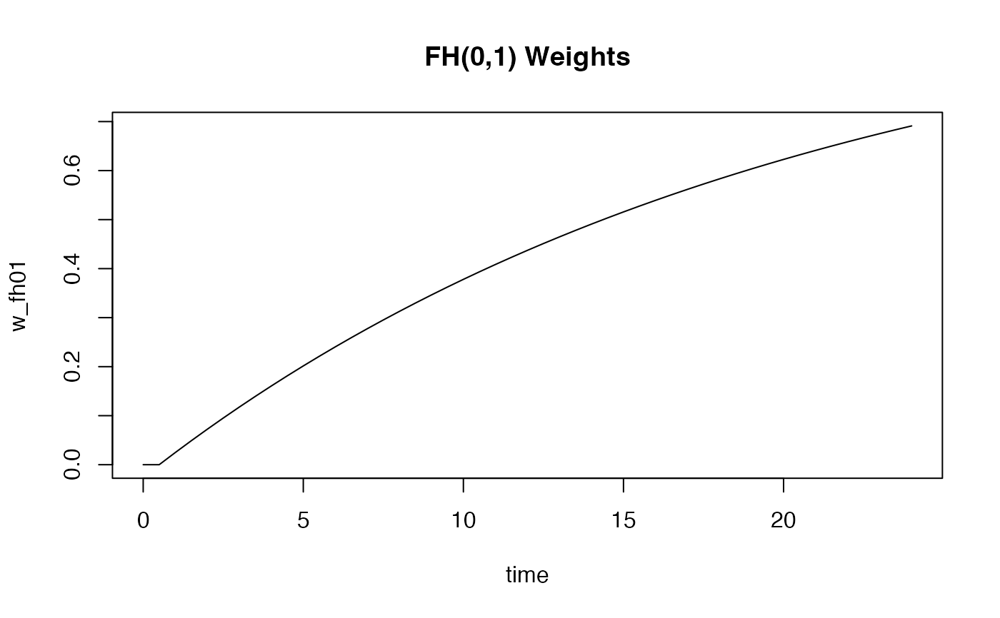
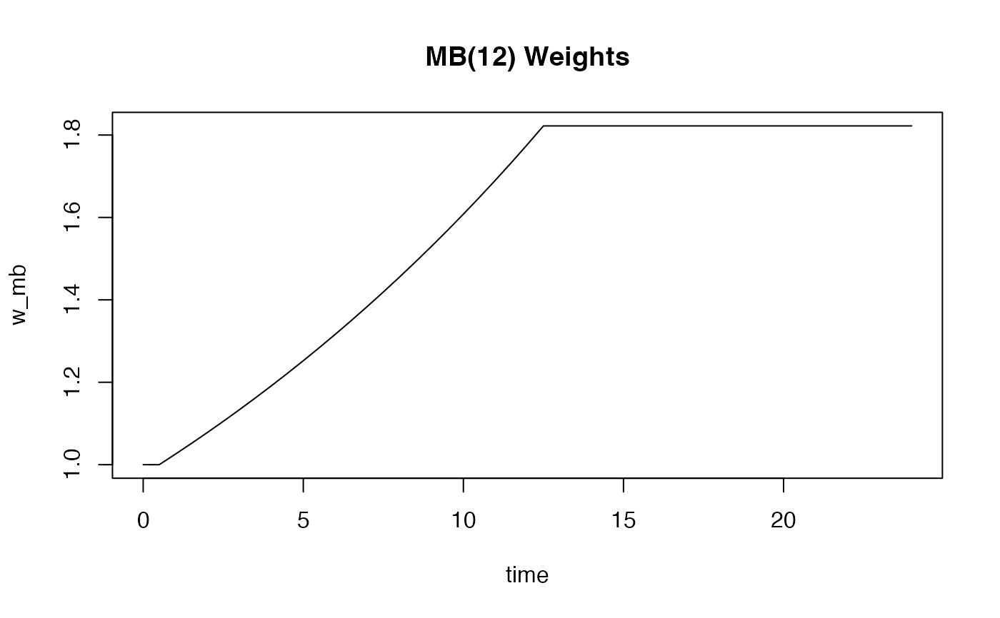
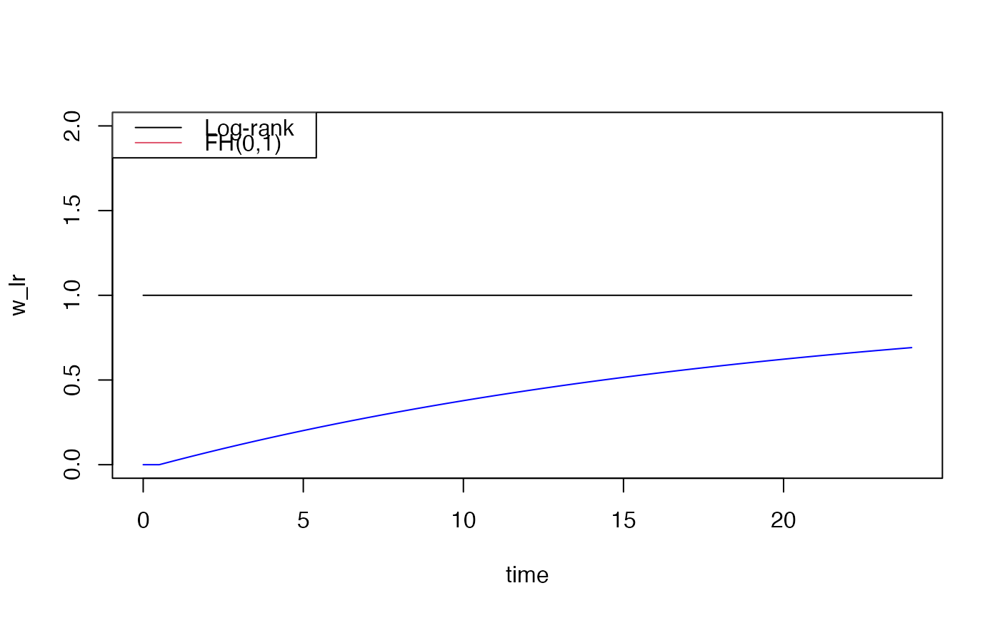

Calculates time-dependent weights for survival analysis according to various schemes (Fleming-Harrington, Schemper, XO, MB, custom).
Usage
wt.rg.S(
S,
scheme = c("fh", "schemper", "XO", "MB", "custom_time", "fh_exp1", "fh_exp2"),
rho = NULL,
gamma = NULL,
Scensor = NULL,
Ybar = NULL,
tpoints = NULL,
t.tau = NULL,
w0.tau = 0,
w1.tau = 1,
mb_tstar = NULL,
details = FALSE
)Arguments
- S
Numeric vector of survival probabilities at each time point.
- scheme
Character; weighting scheme. One of: 'fh', 'schemper', 'XO', 'MB', 'custom_time', 'fh_exp1', 'fh_exp2'.
- rho
Numeric; rho parameter for Fleming-Harrington weights. Required if scheme='fh'.
- gamma
Numeric; gamma parameter for Fleming-Harrington weights. Required if scheme='fh'.
- Scensor
Numeric vector; censoring KM curve for Schemper weights. Must have same length as S.
- Ybar
Numeric vector; risk set sizes for XO weights. Must have same length as S.
- tpoints
Numeric vector; time points corresponding to S. Required for MB and custom_time schemes.
- t.tau
Numeric; cutoff time for custom_time weights.
- w0.tau
Numeric; weight before t.tau for custom_time weights.
- w1.tau
Numeric; weight after t.tau for custom_time weights.
- mb_tstar
Numeric; cutoff time for Magirr-Burman weights.
- details
Logical; if TRUE, returns list with weights and diagnostic info. Default: FALSE.
Value
If details=FALSE (default): Numeric vector of weights with length equal to S.
If details=TRUE: List containing:
- weights
Numeric vector of calculated weights
- S
Input survival probabilities
- S_left
Left-continuous survival probabilities
- scheme
Scheme name
Details
This function implements several weighting schemes for weighted log-rank tests: See vignette for details This function implements several weighting schemes for weighted log-rank tests:
- Fleming-Harrington (fh)
w(t) = S(t-)^rho * (1-S(t-))^gamma. See vignette for common choices.
- Schemper
w(t) = S(t-)/G(t-) where G is the censoring distribution.
- Xu-O'Quigley (XO)
w(t) = S(t-)/Y(t) where Y is risk set size.
- Magirr-Burman (MB)
w(t) = 1/max(S(t-), S(t*)).
- Custom time
Step function with weight w_0 before t* and w_1 after t*.
Note
All weights are calculated using left-continuous survival probabilities S(t-) to ensure consistency with counting process notation.
References
Fleming, T. R. and Harrington, D. P. (1991). Counting Processes and Survival Analysis. Wiley.
Magirr, D. and Burman, C. F. (2019). Modestly weighted logrank tests. Statistics in Medicine, 38(20), 3782-3790.
Schemper, M., Wakounig, S., and Heinze, G. (2009). The estimation of average hazard ratios by weighted Cox regression. Statistics in Medicine, 28(19), 2473-2489.
See also
Other survival_analysis:
KM_diff(),
cox_rhogamma(),
df_counting()
Other weighted_tests:
cox_rhogamma(),
df_counting()
Examples
# Generate example survival curve
time <- seq(0, 24, by = 0.5)
surv <- exp(-0.05 * time) # Exponential survival
# Fleming-Harrington (0,1) weights
w_fh01 <- wt.rg.S(surv, scheme = "fh", rho = 0, gamma = 1, tpoints = time)
# Magirr-Burman weights
w_mb <- wt.rg.S(surv, scheme = "MB", mb_tstar = 12, tpoints = time)
# Standard log-rank (equal weights)
w_lr <- wt.rg.S(surv, scheme = "fh", rho = 0, gamma = 0)
# Plotting examples
plot(time, w_fh01, type = "l", main = "FH(0,1) Weights")

plot(time, w_mb, type = "l", main = "MB(12) Weights")

# Compare multiple schemes
plot(time, w_lr, type = "l", ylim = c(0, 2))
lines(time, w_fh01, col = "blue")
legend("topleft", c("Log-rank", "FH(0,1)"), col = 1:2, lty = 1)
